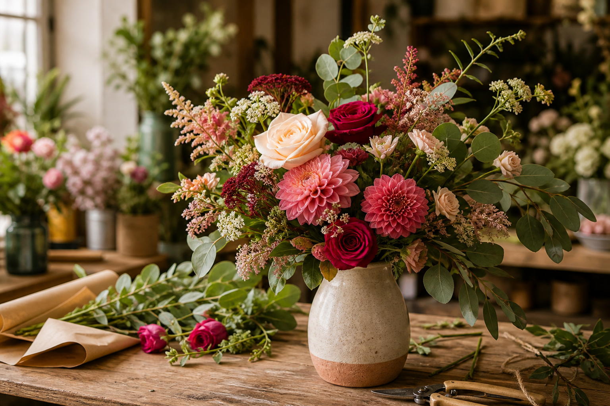
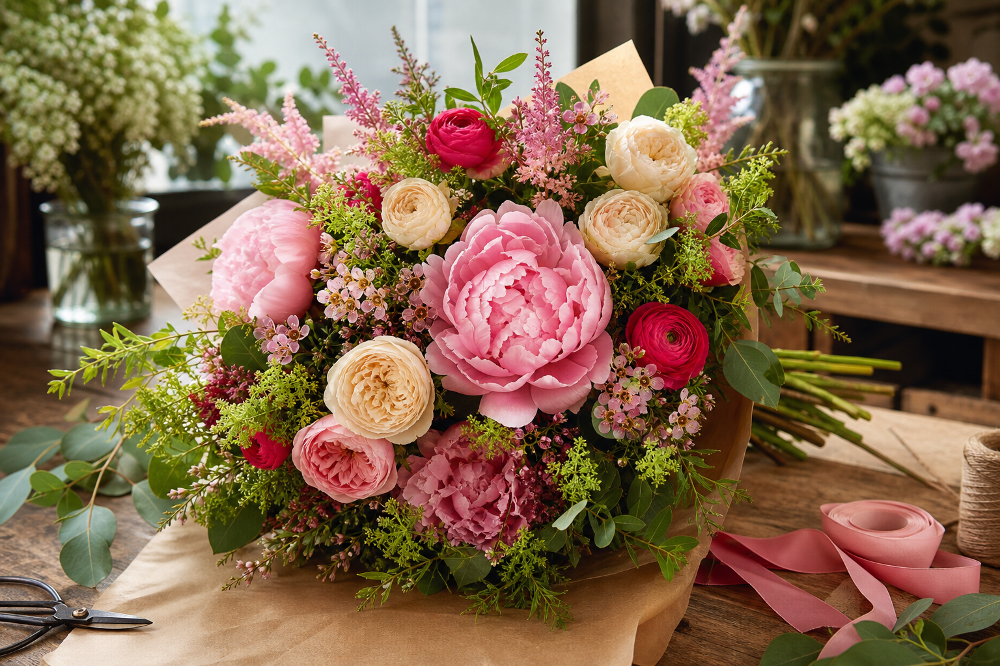
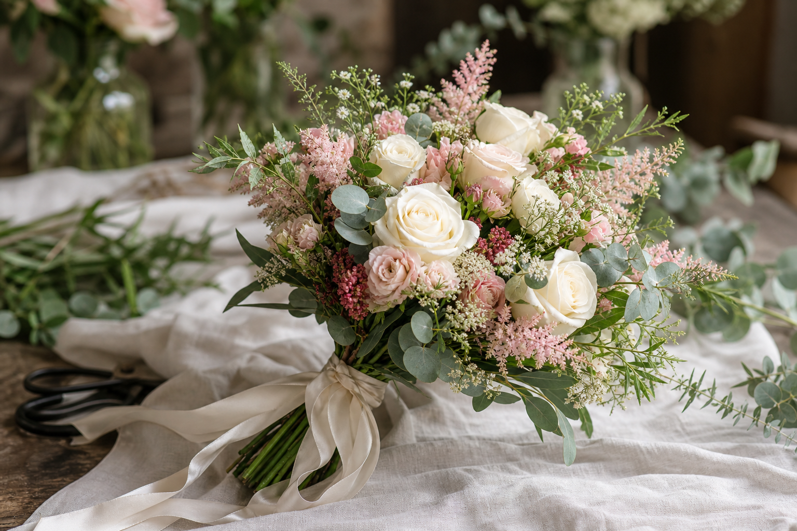
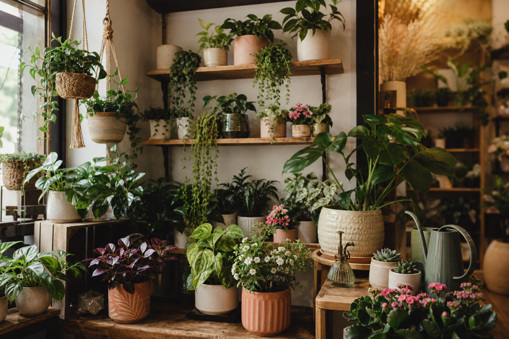

🌷
Bouquets de saison
Des bouquets frais composés avec des fleurs sélectionnées selon les arrivages.
Fleuriste local • Bouquets • Compositions
Maquette fictiveL'Atelier Floral imagine des créations naturelles, élégantes et personnalisées pour offrir, décorer ou accompagner les moments importants de votre vie.
Nos créations
Chaque composition est pensée selon la saison, vos envies et le message que vous souhaitez transmettre.
Des bouquets frais composés avec des fleurs sélectionnées selon les arrivages.
Bouquets, centres de table et décorations florales pour une journée unique.
Des compositions personnalisées selon vos couleurs, votre style et votre budget.
Une sélection de plantes décoratives pour apporter du végétal à votre intérieur.
Décorations florales pour anniversaires, réceptions et moments professionnels.
Livraison de bouquets et compositions dans les environs de la boutique.
À propos
Situé au coeur de Strasbourg, L'Atelier Floral accompagne chaque client avec des conseils simples, des fleurs fraîches et des créations préparées avec soin.
Notre objectif : proposer des bouquets naturels, élégants et adaptés à chaque occasion, du petit plaisir du quotidien aux grands événements.

Galerie
Une sélection de créations pour imaginer l'ambiance de votre prochain bouquet.



Commande rapide
Choisissez une intention, nous vous accompagnons dans la création d'un bouquet adapté.
Des bouquets colorés et joyeux pour marquer une belle journée.
CommanderDes compositions élégantes pour accompagner une journée unique.
CommanderUne attention florale douce pour dire merci avec simplicité.
CommanderDes compositions sobres et délicates pour transmettre votre soutien.
CommanderContact
Contactez-nous pour une commande, une composition personnalisée ou une livraison locale.
Téléphone : 03 00 00 00 00
Email : contact@atelier-floral.fr
Adresse : 18 rue des Jardins, 67000 Strasbourg
Mardi - Vendredi : 9h00 - 18h30
Samedi : 9h00 - 17h00
Dimanche - Lundi : Fermé